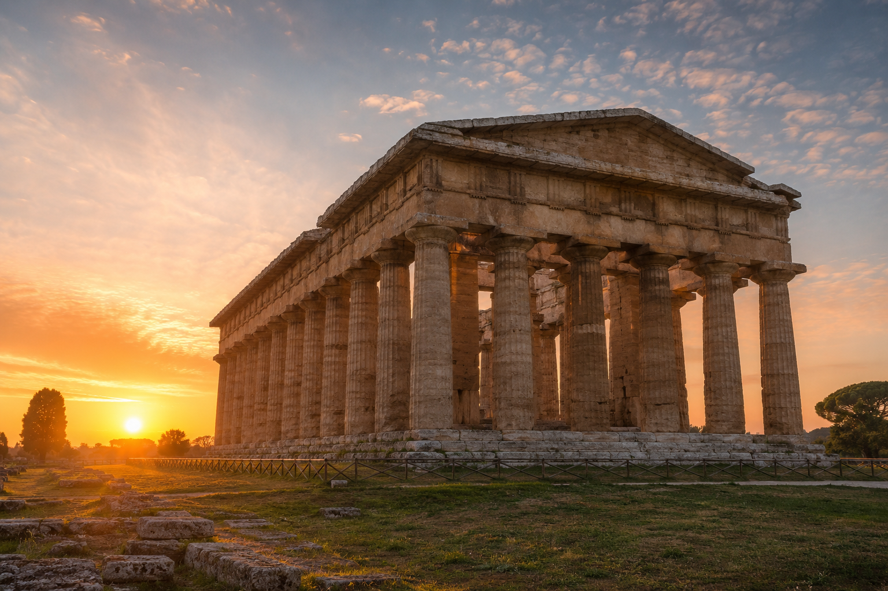
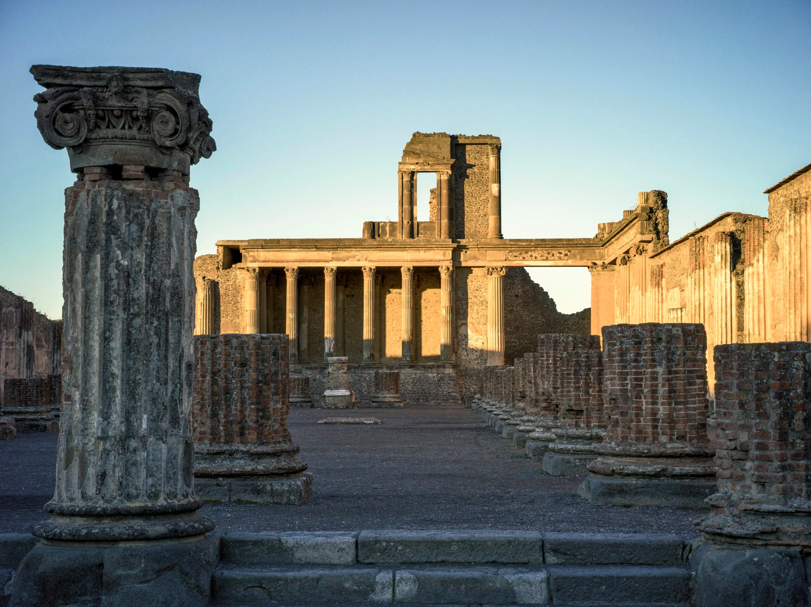
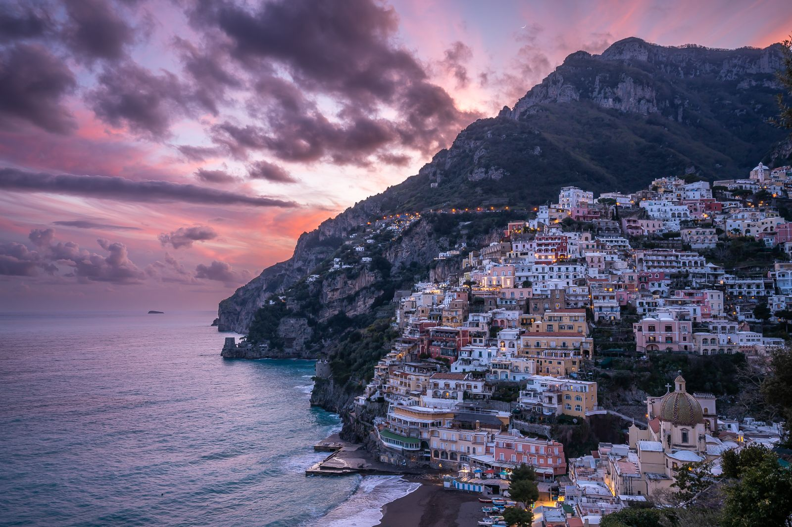
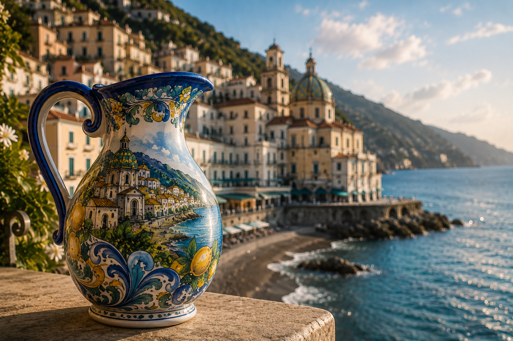

Crossing Salerno, un B&B che accoglie i suoi ospiti nel cuore della città, tra comfort contemporaneo,
dettagli raffinati e il fascino autentico del Mediterraneo.
Crossing Salerno
Un luogo dove il tempo rallenta.
Ospitalità, storia e il fascino autentico di Salerno.
Crossing Salerno è un B&B accogliente e curato in ogni dettaglio, concepito per offrire un soggiorno all'insegna del comfort, della quiete e di un'autentica arte dell'accoglienza.
La struttura ha sede in un prestigioso palazzo d'inizio Novecento, dove il fascino dell'architettura storica incontra il piacere di ambienti luminosi, armoniosi e funzionali.
Le camere sono pensate per garantire riposo e benessere in ogni momento della permanenza, in un'atmosfera intima e riservata, ideale per chi desidera sentirsi accolto con discrezione e attenzione.
Crossing Salerno invita a vivere il territorio con naturalezza. Dal Lungomare Trieste al centro storico, dalla Via dei Mercanti alla Cattedrale di San Matteo, dalla Villa Comunale al Teatro Giuseppe Verdi, fino al Giardino della Minerva, alla storica Scuola Medica Salernitana e al Castello di Arechi, tutto è raggiungibile in pochi minuti.
Nelle vicinanze si trovano inoltre ristoranti, caffè, negozi e collegamenti verso la Costiera Amalfitana, Capri, Ischia e la Costiera Cilentana.
La nostra filosofia si fonda su una discreta eleganza e una cura autentica dell'ospitalità. Che si tratti di una pausa romantica, di una vacanza di piacere o di un viaggio di lavoro, Crossing Salerno rappresenta una scelta ideale per chi cerca comfort, quiete e un'accoglienza sincera.
Le camere
Quattro ambienti, quattro identità.
Ogni camera è stata progettata per offrire un'esperienza diversa, ispirata ai colori, ai materiali e all'anima di Salerno.
01
Marea
Ispirata al movimento del mare e alla luce dorata del Mediterraneo, Marea è una CAMERA MATRIMONIALE SUPERIOR. Ispirata al movimento del mare e alla luce dorata del Mediterraneo, offre un soggiorno elegante dove il tempo segue il ritmo lento delle onde.
Materica, contemporanea e ricca di carattere, Urban è una JUNIOR SUITE, perfetta per una coppia oppure per un nucleo familiare. Materica, contemporanea e ricca di carattere, interpreta l'anima più dinamica di Crossing attraverso materiali autentici e atmosfere sofisticate.
Un omaggio alla memoria, alla cultura e ai dettagli che raccontano storie. Trame è una CAMERA MATRIMONIALE DELUXE, pensata per una coppia. Un omaggio alla memoria e alla cultura, accoglie gli ospiti in un'atmosfera sospesa tra eleganza e fascino senza tempo.
Sabbia è una SUITE, ideale per una coppia oppure per un nucleo familiare. Toni caldi, luce soffusa e materiali naturali creano uno spazio intimo pensato per ritrovare quiete ed equilibrio.
Quattro atmosfere, quattro modi di vivere il soggiorno.
01
Marea
Marea
Una camera luminosa e avvolgente, ispirata al movimento del mare e alla luce dorata che accarezza l’orizzonte. Le sfumature d’azzurro richiamano l’acqua, il cielo e la profondità del Mediterraneo, mentre i dettagli in oro evocano il riverbero del sole sulla superficie marina, come una promessa di viaggio e scoperta.
Marea è la stanza del movimento dolce, dell’attesa e del desiderio di partire: un ambiente elegante e fluido, pensato per lasciarsi attraversare dalla luce, dal silenzio e dal ritmo naturale delle onde.
Qui il soggiorno diventa un invito ad abbandonarsi alla bellezza del mare, seguendo il suo respiro lento e continuo.
Bagno: elegante bagno privato con nicchia doccia dotata di porte scorrevoli, set di cortesia composto da shampoo e bagnoschiuma.
Materica, intensa e contemporanea, Urban interpreta l’anima cittadina di CROSSING. I mattoncini, il parquet, il nero e il rosso vinaccio creano un’atmosfera decisa, calda e sofisticata, dove il linguaggio industriale incontra il comfort dell’accoglienza.
È la stanza dell’energia, del carattere e del movimento urbano: un ritmo più profondo, fatto di contrasti, materia e personalità.
In Urban, la città entra nello spazio con la sua forza discreta: il fascino delle superfici vissute, il calore del legno, la profondità dei toni scuri e la vibrazione contemporanea di un ambiente pensato per chi ama atmosfere autentiche, dinamiche e ricche di carattere.
Bagno: moderno bagno privato con doccia walk-in.
La camera è dotata di cyclette.
Contattare l'host per soluzioni familiari.
Con il suo letto in ferro nero a baldacchino, le pareti dal bianco caldo e le locandine d’epoca, Trame è un omaggio alla storia, alla cultura e alla memoria visiva.
Ogni dettaglio sembra custodire un racconto, un’immagine, un frammento di tempo; ogni elemento invita a soffermarsi, osservare e lasciarsi accompagnare da atmosfere sospese tra eleganza e nostalgia.
È la stanza più narrativa di CROSSING: un luogo in cui passato e presente si intrecciano con naturale raffinatezza, trasformando il soggiorno in un piccolo viaggio dentro la memoria.
Trame parla di storie che si incontrano, di epoche che dialogano e di una bellezza silenziosa che prende forma attraverso dettagli, immagini e suggestioni.
Bagno: raffinato bagno privato con doccia walk-in e set di cortesia composto da shampoo e bagnoschiuma
Calda, intima e raffinata, Sabbia è la suite dell’approdo. Le tonalità fango e sabbia, i quadri antichi e lo specchio dorato creano un’atmosfera avvolgente, preziosa e silenziosa, in cui la materia si fa morbida e la luce assume riflessi caldi e raccolti.
Dopo il movimento del viaggio, Sabbia accoglie con la sua quiete naturale: un rifugio elegante dove ritrovare tempo, equilibrio e bellezza, nella dimensione più intima e luminosa dell’arrivo.
È la stanza del riposo profondo, della calma ritrovata, del piacere di sentirsi finalmente a destinazione, circondati da dettagli che parlano di memoria, eleganza e accoglienza.
Bagno: bagno privato con box doccia angolare set di cortesia composto da shampoo e bagnoschiuma.
Ogni dettaglio racconta un modo diverso di vivere Crossing Salerno.
Comfort inclusi
Essenziale, chiaro, senza pensieri.
Quattro stanze
Quattro camere curate, luminose e confortevoli.
Balcone privato
Tutte le camere sono dotate di balcone privato.
Camere non fumatori
Ambienti pensati per garantire comfort e benessere.
Wi‑Fi gratuito
Connessione veloce per lavoro, viaggio e relax.
Aria condizionata
Comfort climatico in ogni camera.
Ascensore
Il palazzo è munito di ascensore.
Accessibilità
Le persone con mobilità ridotta devono effettuare il primo accesso in struttura durante gli orari di portineria per l’utilizzo del servoscala a piattaforma.
Videosorveglianza
Le aree comuni sono dotate di un sistema di videosorveglianza.
In ogni camera
Cassaforte
Bollitore per tè, tisane e caffè
Mini frigo, con possibilità di richiedere bevande specifiche
Bagno privato con bidet, doccia e phon
Rivelatori antincendio in ogni camera e nelle aree comuni
Materassi ignifughi a molle insacchettate con topper
Informazioni utili
Check-inDalle 15:00 alle 20:00Check-outEntro le 10:30AnimaliNon ammessi
🌿 Nel rispetto dell'ambiente, per i soggiorni di più notti
il cambio della biancheria da bagno viene effettuato su richiesta.
Servizi su richiesta
Ogni dettaglio del viaggio, organizzato con cura.
Crossing Salerno può assisterti nell’organizzazione di servizi extra tramite partner selezionati. Tutti i servizi sono disponibili su richiesta, soggetti a disponibilità e da comunicare in anticipo contattando l'host.
Transfer privati
Transfer privato da/per Aeroporto di Napoli Capodichino, Aeroporto Salerno Costa d’Amalfi e Stazione di Napoli Centrale.
Biglietti traghetti
Assistenza per biglietti verso Costiera Amalfitana, Capri, Ischia e Costiera Cilentana. Se richiesti in anticipo, possono essere fatti trovare direttamente in struttura.
Biglietti teatro
Supporto per la prenotazione di spettacoli ed eventi teatrali.
Consulta i programmi ufficiali del Teatro Verdi di Salerno e scegli
gli spettacoli di tuo interesse.
Accesso su richiesta a palestra convenzionata con sauna e possibilità di sessioni con personal trainer.
Deposito bagagli
Possibilità di lasciare i bagagli prima del check-in o dopo il check-out, su richiesta e in base alla disponibilità.
Ceramiche vietresi
Assistenza per facilitare acquisti di ceramiche vietresi presso rivenditori e botteghe selezionate.
Noleggio auto, moto, e-bike, barche e gommoni
Assistenza per il noleggio di auto, moto, biciclette elettriche, barche e gommoni, con o senza skipper.
Garage coperto
Possibilità di prenotare un posto auto in garage coperto, su richiesta e in base alla disponibilità.
Colazione in bar convenzionato
Possibilità di organizzare la colazione presso un bar convenzionato adiacente alla struttura.
Prenotazione spiaggia
Assistenza per la prenotazione di ombrellone e lettini presso stabilimenti balneari, in base alla disponibilità.
Convenzioni con ristoranti e pizzerie
Assistenza per la prenotazione presso ristoranti e pizzerie convenzionati adiacenti alla struttura.
Prenotazione parchi acquatici
Assistenza per la prenotazione degli ingressi ai parchi acquatici, in base alla disponibilità.
Prenotazione NCC
Assistenza per la prenotazione di NCC per escursioni private
Culla
Possibilità di richiedere culla per bambini
Salerno awaits
Mare, centro storico e partenze verso la costa.
Passeggiare sul lungomare, scoprire il Duomo, raggiungere il porto, partire verso Amalfi, Positano, Capri, Ischia o Vietri sul Mare: Crossing Salerno è un punto di partenza elegante e centrale per vivere la città e il Mediterraneo.
Il territorio
Tra storia, mare e paesaggi senza tempo.
Da Crossing Salerno si raggiungono facilmente alcuni dei luoghi più affascinanti della Campania,
tra siti archeologici, borghi marinari e panorami che raccontano la storia del Mediterraneo.

01
Paestum
I templi dorici, la piana degli dèi,
il tramonto che accende le colonne.
PARCO ARCHEOLOGICO UNESCO
I templi del Mediterraneo.
Fondata nel VI secolo a.C., cuore pulsante della Magna Graecia, Paestum custodisce alcuni dei templi dorici meglio conservati al mondo, immersi nella quiete della piana del Sele.
02
Amalfi
Il mare che incontra la roccia,
il bianco delle case,
la luce della Costiera Amalfitana.
PATRIMONIO UNESCO
La Repubblica Marinara.
Affacciata su uno dei tratti di costa più celebri del Mediterraneo,
Amalfi custodisce secoli di storia tra vicoli, piazze,
terrazze sul mare e la maestosa Cattedrale di Sant'Andrea.

03
Pompei
La città sospesa nel tempo,
le strade romane,
il respiro del Vesuvio.
PATRIMONIO UNESCO
La città eterna.
Un viaggio unico nella storia dell'antica Roma.
Le domus, gli affreschi, il Foro e gli edifici pubblici
raccontano la vita quotidiana di una città rimasta
immutata dopo l'eruzione del Vesuvio del 79 d.C.

04
Positano
Le case color pastello,
il mare cristallino,
l'icona della Costiera Amalfitana.
COSTIERA AMALFITANA
Verticale sul mare.
Un intreccio di vicoli, bouganville e terrazze affacciate sul
Mediterraneo. Positano incanta con le sue spiagge, le boutique
artigianali e l'atmosfera senza tempo che l'ha resa una delle
destinazioni più celebri d'Italia.
05
Capri
Scogli scolpiti dal mare,
acque turchesi,
l'isola più celebre del Mediterraneo.
GOLFO DI NAPOLI
L'isola della luce.
Capri affascina con i suoi Faraglioni, la celebre Piazzetta,
la Grotta Azzurra e i panorami sospesi sul mare. Un luogo
iconico dove natura, eleganza e tradizione si incontrano in
uno degli scenari più esclusivi d'Italia.

06
Vietri sul Mare
Le ceramiche dipinte a mano,
i vicoli colorati,
la porta della Costiera Amalfitana.
CERAMICA ARTIGIANALE
I colori della Costiera.
Vietri sul Mare racconta la sua identità attraverso maioliche,
botteghe artigiane, cupole colorate e terrazze affacciate sul
Mediterraneo. Un borgo vivace, elegante e profondamente legato
alla tradizione ceramica campana.
Dove siamo
Nel cuore di Salerno.
Crossing Salerno si trova in Via Alberto Pirro 12, in una posizione comoda per raggiungere centro storico, lungomare, stazione e porto. Apri la mappa per calcolare il percorso direttamente da Google Maps.